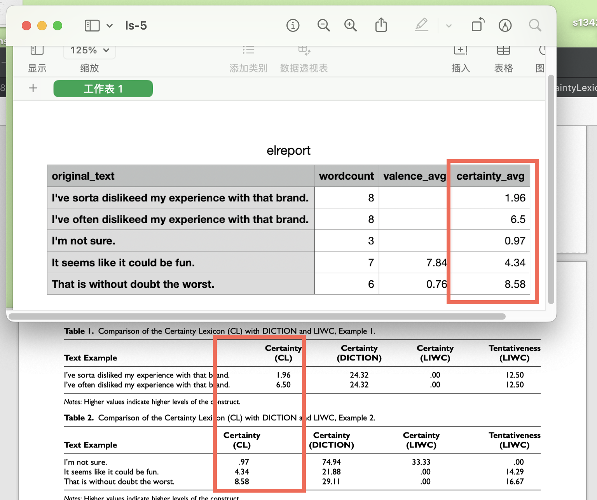

一、文献
Rocklage Matthew D.,He Sharlene,Rucker Derek D.,Nordgren Loran F..Beyond Sentiment: The Value and Measurement of Consumer Certainty in Language[J].Journal of Marketing Research,2023,60(5).
摘要(译文): 情感分析从根本上改变了市场营销者评估消费者意见的能力。的确，通过自然语言测量态度已经影响了市场营销在日常实践中的方式。然而，最近的研究发现，情感分析目前强调测量情感的正负面（即积极或消极）可能会产生不完整、不准确甚至误导性的见解。从概念上讲，这项研究挑战情感分析超越对情感正负面的侧重。作者识别出消费者情感的确定性或信心是一个特别有力的评估方面。从经验上，他们开发了一种新的计算语言中确定性的测量工具——「确定性词典（Certainty Lexicon），并验证了其与情感分析的使用。为了构建和验证这种测量，作者使用了来自1160万人的文本，他们生成了数十亿的词汇，数百万的在线评论，以及在线预测市场的数十万条记录。在社交媒体数据集、实验室实验和在线评论中，作者发现与其他工具相比，确定性词典在其测量中更为全面、可推广和准确。作者还展示了对市场营销者来说，测量情感确定性的价值：确定性预测了广告的实际成功，而传统的情感分析则未能做到这一点。
二、消费者的确定性
为了更好地理解消费者情绪，我们认为消费者持有该情绪的确定性是至关重要的。确定性是个人对信心或信仰的主观感觉（Petrocelli, Tormala, 和 Rucker 2007）。态度研究的结果表明，消费者对所持有的态度或信仰的确定性越强，该态度或信仰驱动行为的可能性就越大（参见 Tormala 和 Rucker 2018）。例如，研究表明，当态度持有更大的确定性时，态度和行为意图之间的关联更强（r = .89），而确定性较低时关联较弱（r = .68；Tormala 和 Petty [2002], 实验 4；参见也有 Franc [1999]）。同样，持有更大确定性的想法更能预测人们对这些想法的依赖（Briñol, Petty, 和 Tormala 2004）。在态度文献中，大量的研究表明，持有更大确定性的态度更可能随着时间的推移而持续，并抵御变化（Rucker, Petty, 和 Briñol 2008；Tormala 2016；Tormala 和 Petty 2002）。
确定性还与情感值（sentiment, 即它是积极还是消极）和情感效价（valence, 即情感的价值是多么的正或多么的负）有所不同（Clarkson, Tormala, 和 Leone 2011；Petty 和 Krosnick 1995）。虽然更极端的情感值通常与更确定的态度相关联，但这种关联并不强烈（例如，r ∼ .50；Krosnick 等人 1993）。即使文本中情感效价是相同的，但语言中的确定性的差异也可能很普遍（参见 Rucker 和 Petty 2004；Tormala 和 Petty 2002）。此外，极端态度可能持有的确定性较低（Litt 和 Tormala 2010），并且不太可能随着时间的推移而持续（Rocklage 和 Luttrell 2021）。因此，确定性 和 情感效价极端性 是不同的。
举例来说，考虑两位顾客访问同一家餐厅并给予其完美的五星评级。尽管他们对餐厅的态度都是一样的正面，但其中一位可能对其态度更有确定感，因为他们的许多朋友持有类似的态度（Tormala 和 DeSensi 2009）。尽管态度的情感值完全相同，但确定性更强的顾客更有可能再次光顾餐厅并将其推荐给他人（例如，Barden 和 Petty 2008）。确定性的差异可以由社交共识的数量或直接的个人经验等因素产生。更普遍地说，确定性可以源于任何影响消费者感觉其态度或信仰背后的信息是准确、完整、相关、合法或重要的因素（Rucker 等人 2014）。
鉴于确定性是态度的一个重要和突出的方面，它是扩展消费者情感评估的理想候选指标。目前，情感分析主要集中在测量价值上，但忽略了与该价值相关的确定性。此外，研究表明，因为大多数在线表达的消费者情感都是积极的，所以市场营销人员经常面临一个“positivity problem”（Rocklage, Rucker, 和 Nordgren 2021b）。这种正面信息的过剩导致了价值的受限范围，仅基于价值或价值极端性就很难获得洞察。在这些情境中，确定性的测量可能特别有用，确定性可能比情感价更准地预测消费者行为。
三、语言中的确定性测量
3.1 已有测量工具
语言中确定性的两个最突出的度量来自Linguistic Inquiry and Word Count (LIWC; Pennebaker等人2015) 和 DICTION (Hart和Carroll 2015) 软件程序。这两个程序都提供了用于评估文本属性（如其情感）的测量方法。尽管它们也包含与确定性相关的测量，但这些测量在其有效性、普遍性以及它们用于量化语言的方法上都存在局限性。
首先，LIWC 和 DICTION 都没有得到足够的实证验证来测量确定性，也没有经过验证以评估情感确定性。例如，这两个工具都是基于研究者对哪些词会表示个人的确定性的直觉来创建的，而不是一个更正式或基于数据的方法（Hart 1976；Pennebaker 和 Francis 1996）。LIWC包含两个名为“确定性”和“犹豫”的确定性度量。然而，“certainty”测量尚未得到直接验证（Petrie, Booth, 和 Pennebaker 1998），而“tentativeness”测量仅在一组35名写有关其大学经历的大学生中得到验证（Pennebaker和Francis 1996）。同样，DICTION的确定性测量尚未直接得到验证（Hart 1976, 1984）。尽管它们有可能作为情感确定性的测量工具，但其有效性和普遍性仍然不清晰。
3.2已有工具不足
首先，它们都依赖于词频计数方法。考虑LIWC如何量化以下两个句子：（1）“I’ve often dislikeed my experience with that brand.”和（2）“I’ve sorta dislikeed my experience with that brand.” 。其中 “often”和“sorta”都出现在LIWC的“tentativeness”（certainty）词汇表中。根据LIWC的词频计数方法，这两个句子因此都被给予了12.50%的分数（即，八个词中有一个词表示不确定性）。因此， “often”和“sorta”被计为表示相同程度的不确定性。同样，DICTION给这些句子在确定性上同样的分数。通过简单地计算每个句子中的词，词频计数方法将给定词汇表中的所有词都视为表示相同的确定性。
其次，在测量短文本时候表现较差。这是因为短文本包含的信息相对较少，因此通常只有一个与确定性相关的关键词（Pennebaker等人2015）。鉴于词频计数方法假设给定词典中的所有词都表示相同程度的确定性，这些测量方法可能导致数据中的大偏斜（观察变化小），从而产生大量噪音，因此得到的结果无信息性或甚至具有误导性（Garten等人2018；Rocklage和Rucker 2019；Sterling, Jost, 和 Bonneau 2020）。鉴于市场营销人员依赖社交媒体来了解消费者情感，这一限制对他们尤为重要（Schaefer 2015）。
第三， 只能分析单个词汇，不能处理词组短语。例如，LIWC和DICTION都会将短语“i’m not sure”视为表示高确定性，因为它包含单词“sure”；这些方法无法识别关键短语“not sure”。同样，它们会将“likely”和“extremely likely”视为表示相同程度的确定性。
四、构建确定性词典(Certainty Lexicon)
4.1 构建词典步骤
这篇论文测量消费者确定性的词典叫做Certainty Lexicon， 该词典构建方法及步骤如下
Phase-1 准备候选词表； 根据LIWC和Diction中的相关词，并生成近义词、ngram词组，以扩充确定性词的候选范围。
Phase-2 初始剔除工作； 基于真实场景，剔除掉使用低频的词语与词组， 剔除掉人工阅读后觉得不符合确定性这个概念的词。
Phase-3量化每个词的确定性； 设计9-likert量表(0 = “very uncertain,” and 9 = “very certain”; see Web Appendix B)，通过MTurk在线网站， 发放调查问卷。问题如。收到515多个参与者的问卷，最终保留489有效问卷。
Phase-4 验证词典有效性;
4.2 确定性词典
论文团队开发了 LexiconSuite 文本分析工具，内置了Evaluate Lexicon、Certainty Lexicon，可以用来分析文本的情感、确定性，工具是开源免费的，下载地址 http://www.lexicalsuite.com/ 。 在LexiconSuite软件安装目录中，经过探索我找到了软件内置的词典txt文件。以本文介绍的确定性词典(Certainty Lexicon) ，对应的文件是 Certainty.txt ，
打开txt如上图，使用Python读取发现一共有 3485 个词语(组)
import pandas as pd
df = pd.read_table('Certainty.txt', sep=',')
df
四、计算文本的确定性
根据确定性词典(Certainty Lexicon), 就可以计算文本的确定性指标， 我在mac安装了LexiconSuite并且做了测试，导入了一个csv文件。

点击Run New Analysis
软件运行结果与论文中的Table-1数值是一样的。(额， 准备的实验数据中单词dislike我拼写成了dislikeed的。)
